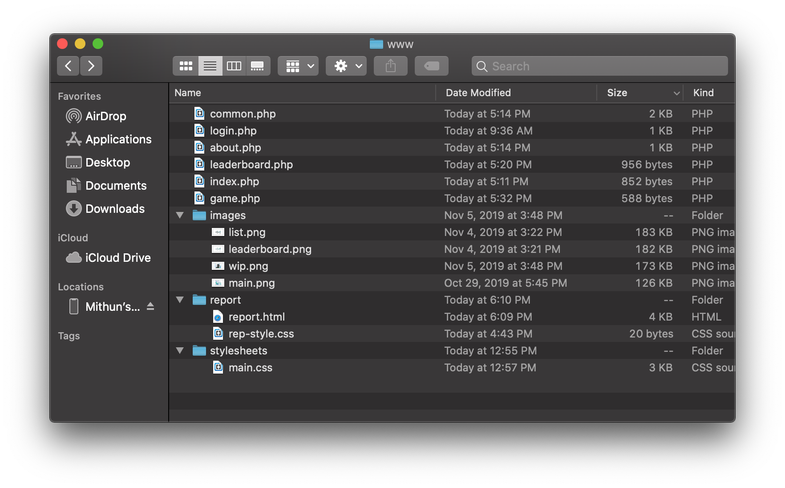
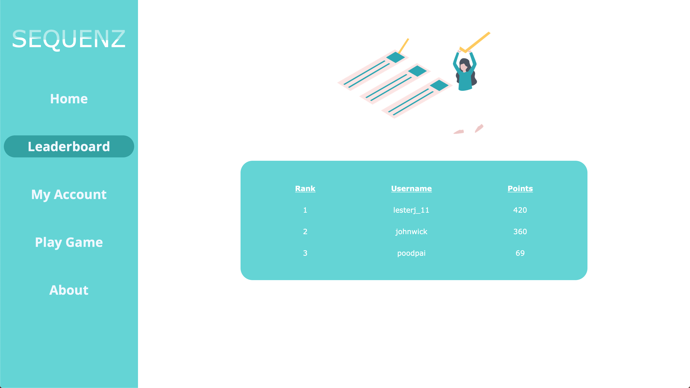
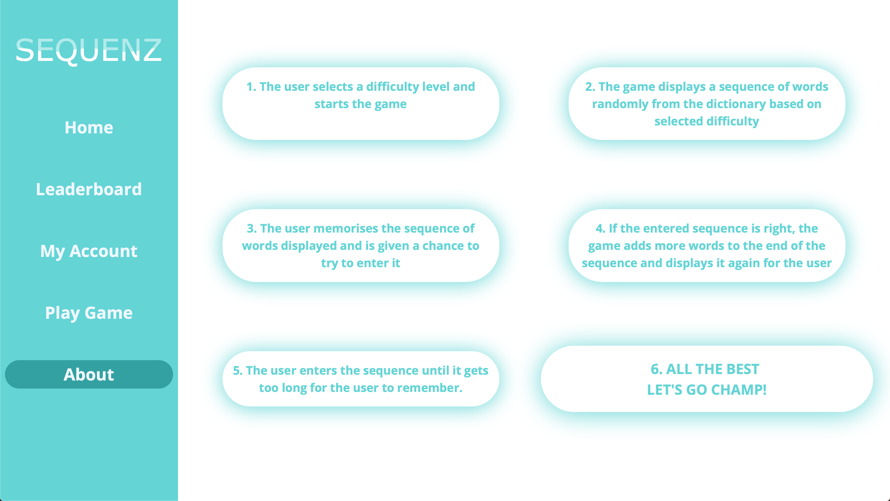

Report - Memorize - CSD2500 - Mithun Shanoj - M00739358
Structure Elements - What types and where are they used?
- header - common.php
- article - index.php,leaderboard.php, game.php
- footer - index.php
- nav - common.php
- section - about.php
Content Elements - What types and where are they used?
- img - index.php, leaderboard.php, game.php
- div - index.php, leaderboard.php, login.php, game.php, about.php
- span - index.php
- a - common.php
- table - leaderboard.php
- form - login.php
- p - game.php
- text - common.php
- svg - common.php
- defs - common.php
- linearGradient- common.php
- pattern - common.php
- path - common.php
- text - common.php
Page Design - What CSS formatting are used to improve page design? Where are they used?
Various tags are used together to make sure the website had a seamless and beautiful user interface. Some of the
most used ones are:
- padding - index.php, leaderboard.php, login.php, game.php, about.php
- border-radius - index.php, leaderboard.php, login.php, game.php, about.php
- margin - index.php, leaderboard.php, login.php, game.php, about.php
- color - index.php, leaderboard.php, login.php, game.php, about.php
- transition - login.php, about.php
What are the classes and ID and where are they used? Why the class/ID is needed?
- logo - ID - common.php
- selected - ID - common.php
- illustrations - ID - index.php, game.php, leaderboard.php
- tagline - Class - index.php, game.php
- w3-container w3-center w3-animate-opacity w3-animate-right - Class - used everywhere
- left - ID - used everywhere
- right - ID - used everywhere
- leaderboard - ID - leaderboard.php
- login - Class - login.php
- register - Class - login.php
- ins-container - Class - about.php
- ins-txt - ID - about.php
These were ID's and Classes were needed for organising and tagging elements for styling purpses
Grid Layout - what is the layout method used and which page/where is it used
CSS grids was the layout method used for this website. It can be seen in:
- login.php
- about.php
PHP Functions - File containing the function, function name, what it does, and any known error.
All PHP functions are contained in common.php. They are:
- outputHeader - Sets website title, and start html/head tags for all the web page and also link to the
stylesheet
- outputBannerNavigation - Set navigation bar for all web pages
- outputFooter - Closes the body and html tag and ends the web page
No known errors
Reusable PHP functions - File containing the function, function name, what it does, and any known error.
All PHP functions are contained in common.php, They're called from all webpages. They are:
- outputHeader - Sets website title, and start html/head tags for all the web page and also link to the
stylesheet
- outputFooter - Closes the body and html tag and ends the web page
No known errors
File Structure
All files are stored in an organised manner for easy access.

Screenshots




3rd Party Library Used - W3.CSS Framework
W3.CSS is a modern CSS framework that contains different forms of animations, forms, pre-made banners and panes.
This framework was used in all pages for animations purposes exclusively.
Framework Website